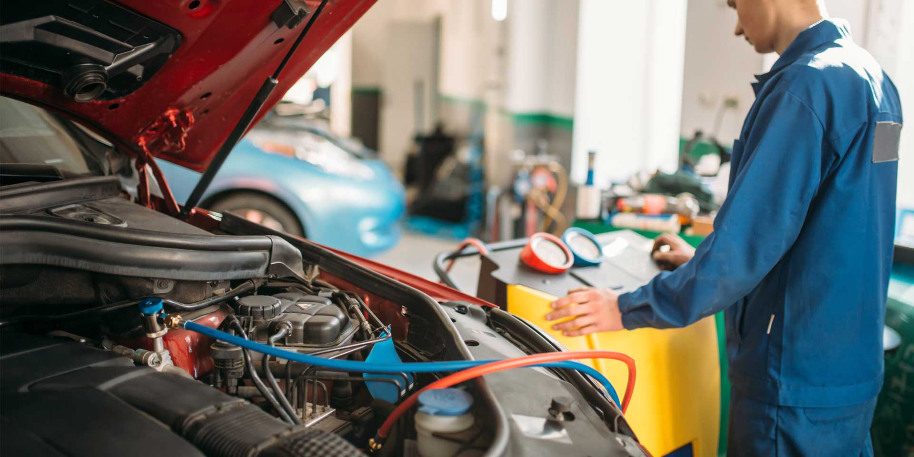

Nosotros
En Lubricentro y Electromecánica Martinez, nos especializamos en ofrecer productos y servicios de alta calidad para el mantenimiento de vehículos. Contamos con un equipo de profesionales capacitados y una amplia gama de productos como lubricantes, filtros, y accesorios para todo tipo de automóviles. Nuestro objetivo es brindar un servicio rápido, eficiente y confiable, asegurando la satisfacción de nuestros clientes.
Con más de 10 años de experiencia en el mercado, nos hemos consolidado como una opción de confianza para todos aquellos que buscan mantener sus vehículos en las mejores condiciones. Visítanos y descubre por qué somos la elección preferida de nuestros clientes.
Servicios Ofrecidos
- Cambio de aceite y filtros
- Revisión y mantenimiento de frenos
- Diagnóstico y reparación de aire acondicionado
- Venta de lubricantes, repuestos y servicios de electromecánica
Galería de Trabajos Realizados
Mira algunos de los trabajos que hemos realizado recientemente:
